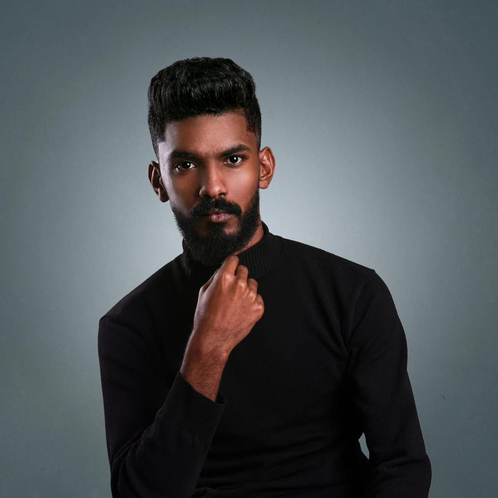

Beat 01
Context
Who the work is for and where it will actually be watched. A conference floor, a phone held one-handed, and a sales suite are three different films. This decides pacing before anything is on the timeline.
● Video Editor ● Videographer ● Photographer ● Graphic Designer
I cut footage into films that hold people. Five years across documentary, commercial and corporate work — plus the photography and design that surround it, so a project doesn't have to change hands to get finished. When the footage doesn't exist, I build it.

Forty-two projects, sorted into eleven disciplines. Each one opens as a case file: what the client came with, what got in the way, what I did about it, and what shipped.
Every project on this page is written the same way, because every project is edited the same way. An edit has a shape long before it has footage.
Who the work is for and where it will actually be watched. A conference floor, a phone held one-handed, and a sales suite are three different films. This decides pacing before anything is on the timeline.
The real constraint, stated plainly. No budget, no footage, degraded material, no access to the location. Naming it precisely is what makes it solvable — most projects here started from a genuine shortage.
The specific decision that answered it. Restoration, structural re-editing, a generative pipeline held to the real product spec, or simply cutting for the moment nobody performed. Craft, then tools.
What the client received and what it did. Delivered without a shoot day. Recovered from unusable footage. Built to hold a standing viewer for thirty seconds.
Detail-oriented editor with a working foundation in photography, sound and design — which means fewer hand-offs and a more consistent result.
I'm a video editor and visual content creator based in Alexandria, Egypt, with over five years of freelance work behind me and a Bachelor's of Multimedia from the University of Garden City.
My core is post-production — short-form reels, documentary storytelling and dynamic edits in Premiere Pro, After Effects and DaVinci Resolve. Around that sits photography, sound engineering and graphic design in Photoshop and Illustrator, so I can approach a project with a full picture of it rather than one stage of it.
I've handled end-to-end editing for founder branding content, documentary and corporate workflows for organisations including Caritas Egypt, and visual identity and design across commercial lines — education agencies (Weghatak), skincare brands (Rose Cosmetics, Roots Naturals), and hospitality (Basbousa & More Cafe, where I also ran the local marketing).
I'm a fast learner, disciplined about deadlines, and I actively integrate AI tools where they extend what's possible on a budget — never as a substitute for the edit itself.
This portfolio covers the full range of what I do — motion, editing and art direction. Whether a brief arrives as raw rushes, a finished script, or a single line of intent, I'm glad to take it apart with you and work out what it actually wants to be.
Bring me a brief, a folder of footage, or a problem you've been told can't be shot. I'll tell you honestly whether I'm the right person for it.